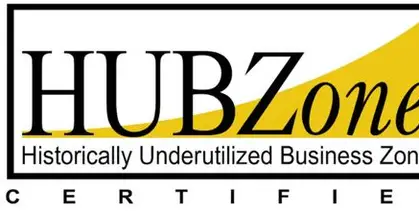
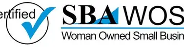

SBA Certified HUBZone
Supporting agency HUBZone contracting goals with mission-focused IT and professional services.
Streamlined acquisition pathways for federal, state, and local government customers.

Supporting agency HUBZone contracting goals with mission-focused IT and professional services.

Providing agencies and industry partners a qualified woman-owned small business contracting option.

IT Services SIN 54151S provides a simplified procurement path for IT and related professional services.
View Contract →
Management & Advisory domain contracts under HUBZone and WOSB tracks.
View Contract →
Engineering, technical, and program management support for Navy and DoD customers.
View Contract →
Available through AAGCS, the joint venture between GCS and Orgro.
View Contract →
Scalable Homeland Innovative Enterprise Layered Defense IDIQ.
View Contract →
IT consulting and technical services for Maryland agencies and authorized entities.
View Contract →Technology, operational, and advisory services supporting County modernization and service delivery.
View Contract →